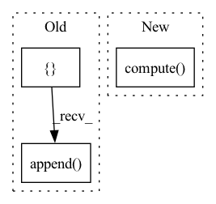

Pattern ID :18304
Before Change
columns_ctx["categorical"]["base"] = cat_names
// check sums for determinancy
checksums = []
for gdf in dataset.to_iter():
new_gdf = hash_bucket_op.apply_op(gdf, columns_ctx, "categorical")
assert np.all(new_gdf[cat_names].values >= 0)
assert np.all(new_gdf[cat_names].values <= 9)
checksums.append( new_gdf[cat_names].sum().values)
for checksum, gdf in zip(checksums, dataset.to_iter()):
new_gdf = hash_bucket_op.apply_op(gdf, columns_ctx, "categorical")
assert np.all(new_gdf[cat_names].sum().values == checksum)After Change
hash_features = cat_names >> ops.HashBucket(num_buckets)
processor = nvt.Workflow(hash_features)
processor.fit(dataset)
new_gdf = processor.transform(dataset).to_ddf().compute()
// check sums for determinancy
assert np.all(new_gdf[cat_names].values >= 0)
assert np.all(new_gdf[cat_names].values <= 9)In pattern: SUPERPATTERN
Frequency: 3
Non-data size: 3
Instances Fragment ID: 59977265
Project Name: nvidia/nvtabular
Commit Name: 4c92dffac4354d816178264bcfcdec722db2ec1c
Time: 2021-01-05
Author: github@benfrederickson.com
File Name: tests/unit/test_ops.py
M Class Name: AnonimousClass
N Class Name: AnonimousClass
M Method Name: test_hash_bucket(6)
N Method Name: test_hash_bucket(6)
M Parent Class:
N Parent Class:
M File Name: tests/unit/test_ops.py
N File Name: tests/unit/test_ops.py
M Start Line: 331
M End Line: 355
N Start Line: 161
N End Line: 178
Before Change
num_batches = 0
current_epoch_losses = []
current_epoch_reg_losses = []
for inputs, targets in loader:
// Run forward calculation
predicted = self.model.forward(**inputs)
// Compute loss.
loss = self.loss_fn(predicted, targets)
current_epoch_losses.append(loss.data.item())
// Regularize.
loss, reg_loss = self._add_batch_regualarizations(loss, reg_lambda_ar)
current_epoch_reg_losses.append( reg_loss.data.item())
self.optimizer.zero_grad()
loss.backward()
self.optimizer.step()After Change
self.scheduler.step()
for metric in self.metrics: metric.compute(save=True)
for metric in self.value_metrics.values(): metric.compute(save=True)
def _add_batch_regualarizations(self, loss, reg_lambda_ar):
Add regulatization terms to loss, if applicable
Fragment ID: 59977281
Project Name: ourownstory/neural_prophet
Commit Name: ea05689f7ccca059223f80c7bd85f8b7943e69d0
Time: 2020-06-16
Author: oskar.triebe@merantix.com
File Name: neuralprophet/neural_prophet.py
M Class Name: NeuralProphet
N Class Name: NeuralProphet
M Method Name: _train_epoch(3)
N Method Name: _train_epoch(3)
M Parent Class:
N Parent Class:
M File Name: neuralprophet/neural_prophet.py
N File Name: neuralprophet/neural_prophet.py
M Start Line: 322
M End Line: 345
N Start Line: 291
N End Line: 319
Before Change
columns_ctx["categorical"]["base"] = list(cat_names)
// check sums for determinancy
checksums = []
for gdf in dataset.to_iter():
new_gdf = hashed_cross_op.apply_op(gdf, columns_ctx, "categorical")
new_column_name = "_X_".join(cat_names)
assert np.all(new_gdf[new_column_name].values >= 0)
assert np.all(new_gdf[new_column_name].values <= 9)
checksums.append( new_gdf[new_column_name].sum())
for checksum, gdf in zip(checksums, dataset.to_iter()):
new_gdf = hashed_cross_op.apply_op(gdf, columns_ctx, "categorical")
assert new_gdf[new_column_name].sum() == checksumAfter Change
assert np.all(new_gdf[new_column_name].values >= 0)
assert np.all(new_gdf[new_column_name].values <= 9)
checksum = new_gdf[new_column_name].sum()
new_gdf = processor.transform(dataset).to_ddf().compute()
assert new_gdf[new_column_name].sum() == checksum
@pytest.mark.parametrize("gpu_memory_frac", [0.01, 0.1]) Fragment ID: 59977273
Project Name: nvidia/nvtabular
Commit Name: 4c92dffac4354d816178264bcfcdec722db2ec1c
Time: 2021-01-05
Author: github@benfrederickson.com
File Name: tests/unit/test_ops.py
M Class Name: AnonimousClass
N Class Name: AnonimousClass
M Method Name: test_hashed_cross(5)
N Method Name: test_hashed_cross(6)
M Parent Class:
N Parent Class:
M File Name: tests/unit/test_ops.py
N File Name: tests/unit/test_ops.py
M Start Line: 1058
M End Line: 1085
N Start Line: 659
N End Line: 674